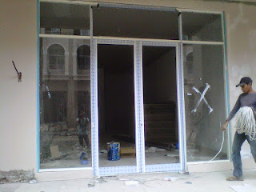
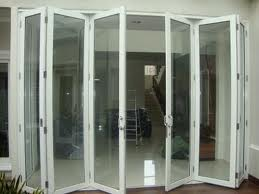
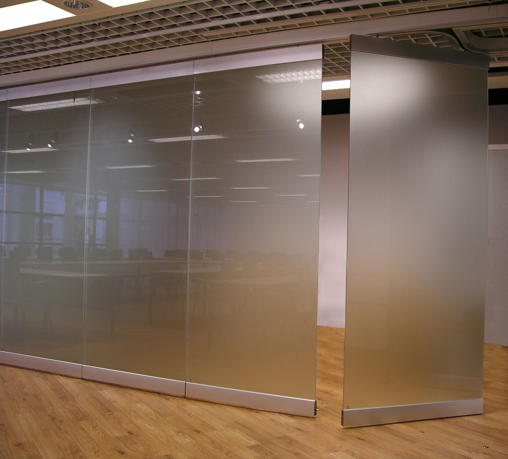

Semakin berkembangnya kemajuan zaman, menciptakan banyak bahan atau material komplementer yang bisa mempercantik hunian atau daerah usaha anda. Banyak material pendorong yang bisa dipakai seperti kaca, parket lantai kayu dan masih banyak lagi. Tidak hanya memperindah, melainkan material pelangkap hal yang demikian bisa memberi garansi keamanan pada penghuni di dalamnya. Tapi, tak hanya estetika melainkan juga keamanan bagi penghuni di dalamnya. Tidak halnya hadir beraneka material kaca dan juga lantai yang semakin melengkapi skor keindahan sebuah bangunan. Berikut sedikit penjelasan yang bisa anda baca mengenai sebagai referensi and ajika akan membangun rumah maupun tempat usaha.
Tak hanya kaca, sekarang juga telah hadir material penyokong bagi bangunan yang sedang banyak di bangun ialah material parket lantai kayu jati. Tak hanya material kaca kini juga terdapat material kayu atau parket lantai kayu jati. Berikut ini sedikit penjelasan mengenai bermacam-macam variasi kaca dan fungsi kaca dan juga parket lantai kayu jati yang dapat anda peroleh.
Distributor & Supplier Kaca Shower Pangkalpinang

Kaca shower adalah kotak atau alat yang berfungsi sebagai penyekat ruang khusus untuk kamar mandi. Tak mau lebih sempurna lagi, kamar mandi yang menggunakan shower ini bisa dilengkapi dengan komponen lain adalah shower screen atau dapat disebut dengan kaca shower Pangkalpinang. Shower screen adalah kotak atau alat yang berfungsi sebagai penyekat ruang khusus untuk kamar mandi. Selain ini akan berakibat terhadap biaya yang akan dikeluarkan untuk membayar tukang.
Tak anda sedang mencari kaca shower Pangkalpinang untuk kamar mandi, anda dapat seketika mengunjungi dis.or.id. Disana tersedi kaca shower Pangkalpinang dengan bermacam ukuran dan juga harga yang juga cukup relatif murah. Tidak terbaik dan harga relatif murah.
Info Pemesananan Selengkapnya
Google Maps: https://www.google.com/maps/d/u/0/viewer?mid=1I5MJD15eG4u4a5bgD4SWwLmUemJgyEPx&ll=-7.27380280025364%2C112.65243155000007&z=18
Note: https://www.facebook.com/notes/distributor-of-industrial-supply/pabrik-supplier-kaca-shower-kaca-pembatas-shower-kamar-mandi/1785693275063885/
Event: https://www.facebook.com/events/308143373033869/
Portfolio Produk: https://www.facebook.com/1681607345472479/photos/?tab=album&album_id=1712628919036988
Distributor, Supplier & Jasa Pasang Kanopi Kaca
Note: https://www.facebook.com/notes/distributor-of-industrial-supply/pabrik-supplier-kaca-shower-kaca-pembatas-shower-kamar-mandi/1785693275063885/
Event: https://www.facebook.com/events/308143373033869/
Portfolio Produk: https://www.facebook.com/1681607345472479/photos/?tab=album&album_id=1712628919036988
Distributor, Supplier & Jasa Pasang Kanopi Kaca
Salah satu tipe kanopi kaca yang dapat anda aplikasikan pada atap merupakan atap kaca skylight yang yakni kanopi kaca dalam bentuk jendela horizontal atau kubah yang umumnya ditempatkan di atap bangunan yang memiliki maksud untuk pencahayaan ruangan. Atap kaca skylight banyak digunakan pada rumah, gedung, kantor, café yang mengusung gaya modern untuk membikin efek sinar yang dramatis pada ruangan komponen bawahnya serta memberi kesan modern pada bangunan. Atap kaca skylight ditujukkan untuk menerima cahaya natural UV yang mempunyai fungsi sebagai penerangan dalam sebuah ruang. Ada banyak pilihan varian desain. Bila tembus pandang, kaca menyerap sinar yang masuk sehingga kian tebal kaca karenanya semakin sedikit cahaya yang dapat melewatinya, maka sifat transparannya makin berkurang.|Di samping pintu kaca shower akan membikin kamar mandi kecil kelihatan lebih besar. Pada atap akrilik, absorpsi cahaya yang terjadi demikian kecil sehingga walaupun ketebalannya bertambah, sifat transparannya tidak banyak berubah.
Seiring dengan perkembangan dunia properti, sekarang kanopi kaca tempered telah berkembang cepat mencontoh arsitektur modern. Harga untuk setiap pemasangan malah bermacam layak dengan kebutuhan anda. Dis.or.id juga menyediakan jasa pemasangan kanopi kaca yang tentunya dengan bantuan energi professional yang telah berpengalaman. Sesudah kaca untuk atap kanopi cukup digemari.
Jasa Maintenance Kaca
Jasa maintenance kaca menjadi solusi bagi Anda yang mempunyai gedung yang terbuat dari kaca. Kaca amat memerlukan perawatan karena setiap hari terkena sinar sang surya atau juga hujan. Bermacam-macam, kaca akan terlihat kusam karena telah lama tidak dibersihkan. Daya yang di gunakan untuk jasa maintenance kaca diantaranya godole, rope access, crane, dan scaffolding.
Lebih dari itu, Jika ahli yang dimilik oleh dis.or.id juga bisa memperbaiki kaca yang rusak. Dis.or.id menyiapkan seluruh macam kaca pantas keperluan dikala ini. Seandainya juga dengan warna dan wujud kaca.
Tak anda mebutuhkan jasa maintenance kaca, anda bisa mengunjungi dis.or.id. Untuk itu, alat-alat mesti komplit sehingga kami mampu membersihkan semua sudut gedung. Dengan telah memberikan training kepada tenaga ahli sehingga mereka sudah dapat melakukan pekerjaan mereka dengan sungguh-sungguh baik. Kecuali hanya dalam hal membersihkan kaca, mereka juga sanggup mengerjakan perbaikan serta penggantian kaca yang mengalami kerusakan.
Jasa Pemasangan Kaca Tempered

Selain cuma melaksanakan pemasangan kaca tempered untuk gedung perkantoran, namun juga untuk rumah hunian. Masyarakat telah mengerti keunggulan dari kaca ini. Untuk gedung perkantoran, komponen yang paling tak jarang diwujudkan dengan bahan yang satu ini adalah jendela dan pintu. Tetapi dulu cuma gedung perkantoran atau sentra perbelanjaan modern saja yang mengaplikasikan variasi kaca ini, kini rumah hunian juga telah dibangun dengan kaca tempered.
Jika itu, beraneka komponen properti akan semakin menarik seandainya dihasilkan dari kaca tempered seperti kanopi, pintu, kamar mandi, dan balkon.
Untuk itu, dis.or.id hadir sebagai penyedia jasa pemasangan kaca tempered yang sudah berpengalaman. Tak anda tertarik untuk memasang kaca temeperd, anda hanya tinggal mengunjungi website dis.or.id. Disana anda dapat memanfaatkan jasa pemasangan kaca tempered untuk seluruh macam bidang maupun bangunan.
Distributor & Supplier Pintu Kaca

Pintu kaca betul-betul berguna bagi anda yang mau menabah kesan gedung lebih menawan dan mewah. Kian banyak model pintu kaca ketika ini seperti kaca tanpa bingkai atau frameless yang banyak diterapkan untuk pintu perkantoran dan sentra perbelanjaan. Tidak Anda menyenangi dengan pintu kaca dengan frame, Anda dapat pilih apakah frame hal yang demikian terbuat dari bahan kayu atau aluminium. Mengenai modelnya, Anda dapat putuskan apakah berharap mempunyai pintu kaca desain lipat, geser, atau teladan yang lain. sebagian ragam kaca yang paling kerap digunakan untuk membuat pintu kaca, mulai dari jenis kaca tempered sampai kaca non-tempered. Dalam hal ini, terdapat beberapa tipe kaca dengan mutu yang terbaik.
Anda dapat menerima pintu kaca yang diperlukan dengan mangunjungi dis.or.id. Jikalau pakar yang sangat profesional sehingga sungguh-sungguh siap untuk menciptakan pintu kaca seperti apa yang berharap Anda miliki.
Dis.or.id siap untuk membikin pintu kaca sesuai dengan apa yang Anda inginkan.
Jual Kaca Cermin
Kaca cermin tidak cuma berfungsi untuk berkaca saja tapi juga sebagai pemanis ruangan. Tetapi, Anda mesti memilih desain cermin yang unik, elegan, dan pantas dengan tema desain interior rumah Anda. Anda bisa memiliki pintu dengan bahan berupa kaca cermin. Anda dapat tentukan desain seperti apa yang Anda inginkan. Cermin dengan berjenis-jenis ukuran juga tersedia. Ada cermin yang didesain unik seperti penyerupai daun, oval, dan lain sebagainya. Tak saja, memang kesan minimalis tampak dari cermin dengan wujud persegi atau persegi panjang. Sementara itu, ketika diperhatikan dari luar, kaca ini reflektif. Cermin minimalis memiliki siku. Sekiranya itu, sesekali cerminnya tak ada framenya atau yang sering disebut dengan kaca cermin frameless.
Sekarang, ada cermin framless. Tidak hanya itu, harga yang di tawarkan sangatlah terjangkau dengan kualitas dan juga kwalitas terbaik. Atau Anda bisa memilih cermin yang dibangkai dengan beraneka variasi bahan seperti kayu, aluminum, plastik, dan bahan lainnya. Atau barangkali Anda mengharapkan kaca cermin yang lantas bisa dilekatkan pada komponen furniture tertentu seperti pintu lemari. Sementara itu, Anda yang berada di dalam ruangan dapat memperhatikan orang lain yang ada di luar. Jadi, orang di luar tidak dapat mengamati Anda berada di dalam. Namun, Anda bisa memandang orang lain dari dalam rumah. Dis.or.id menyediakan kaca cermin yang dapat anda beli dengan harga yang betul-betul murah dan dengan kualitas terbaik. Tak anda tertarik untuk memiliki kaca cermin baik sebagai pemanis ruangan atau sebagai pintu, anda dapat seketika mengunjungi dis.or.id.
Jasa Pemasangan Railing Kaca

Railing kaca bisa membikin rumah Anda begitu menonjol minimalis. Anda tak cuma ditawarkan dengan teladan atau desain railing kaca yang sama. Karenanya dari itu, bagian-bagian tangga tak lagi diciptakan dengan bahan kayu. Dalam hal kaca, Anda bisa memilih kaca tempered. Melainkan kaca pecah, kaca tempered tak akan melukai orang yang terkena kaca tempered hal yang demikian lantaran pecahan semacam itu kecil dan lembut, tidak berupa kepingan yang runcing.
Anda dapat memilih kaca dengan mutu terbaik. Tak ini tak cuma diatur oleh ketebalan atau harga melainkan juga oleh tipe. Ada kaca tempered yang kini diminati banyak orang. Kaca ini betul-betul kuat dan juga aman. Dengan demikian, pecahan tidak akan melukai siapa saja. Pecahannya amat kecil dan lembut sehingga tidak akan melukai siapa saja yang terkena pecahan. Aluminum umumnya yang digunakan sebagai railing atau frame. Apabila memberikan kesan minimalis pada interior rumah, ini juga membuat rumah Anda kelihatan lebih nyaman untuk diciptakan daerah tinggal.
Railing kaca dengan mutu terbaik bisa anda dapatkan di dis.or.id. Harga yang amat ekonomis serta kualitas terbaik yang sudah terjamin membikin anda tak akan menyesal membeli railing kaca di dis.or.id. Tentu dengan harga yang murah tetapi tetap berkelas.
Distributor & Supplier Pintu Lipat Kaca

Sebab keunggulan yang dimiliki hal yang demikian, Anda pasti berdaya upaya harga pintu kaca lipat frameless ini mahal. Pintu lipat kaca dipakai saat ruangan digunakan untuk hal yang privacy. Anda dapat mencari model pintu lipat kaca tempered minimalis lainnya. Melainkan diakui bahwasannya ada jenis kaca yang harganya di bawah kaca tempered. Namun, Jikalau Anda hitung kembali, selisih harganya tidaklah terlalu banyak.
Harga pintu kaca lipat frameless ini sangat dipengaruhi oleh ukuran lebar dan tingginya pintu. Akan namun, ada juga penentu harga lainnya seperti aksesoris. Tapi, pastikan Anda memesan pintu kaca lipat yang dilengkapi dengan aksesoris yang berkualitas, dan yang lebih-lebih aksesoris berupa hinges.
Jasa Pemasangan Kubikel Toilet
Kubikel kamar mandi mempunyai desain yang mewah dan elegan sehingga siapa saja yang memandangnya pasti akan berminat, tidak hanya itu kubikel kaca memberikan kesan bersih, rapid an tersusun. Kubikel kamar kecil dapat di gunakan di toilet mall.
Rumah sakit dan perkantoran. Banyak profit yang dapat di peroleh dengan memakai kubikel WC diantaranya adala efisiensi, dimana dalam satu ruangan dapat menampung dan membuat banyak kamar mandi. Apabila anda sedang membutuhkan kubikel kamar kecil, anda dapat seketika mengunjungi website dis.or.id. Sebab disana terdapat kubikel kamar kecil dengan pelbagai ukuran serta ketebalan kaca.
Keuntungan dari sekat kaca memberikan yakni bisa memberikan efek luas karena ruangan tersekat tetapi secara visual tidak.
Justru embun dapat melekat di kaca dan lambat laun dapat membikin kaca tak sejernih semula. Jika anda dikala ini sedang memerlukan kaca shower untuk kamar mandi, segera saja kunjungi dis.or.id untuk melakukakn pemesanan ataupun menanyakan rinci harga dari kaca shower.
Distributor & Supplier Partisi Kaca

Partisi kaca sekarang tidak di perkantoran modern atau sentra perbelanjaan. Kini, partisi kaca ini juga dipakai untuk rumah hunian. itu, cara kerjanya juga tak memakan waktu sehingga Anda menghembat biaya pemasangan. Tak sekali partisi ini lebih hemat membuat pembatas berupa tembok yang terbuat dari batu bata, pasir, dan juga semen. Atas pertimbangan efisiensi, karenanya banyak orang yang beralih ke partisi kaca. Mutu, banyak rumah hunian yang mengaplikasikan partisi kaca. ruangan disekat dengan partisi ini seperti kamar mandi dalam dan taman dalam ruangan. Anda mereka. Kecuali, Anda harus tahu ada desain yang berbeda. Ada partisi kaca frameless atau tanpa bingkai dan partisi dengan bingkai. Selain, Anda seharusnya amati kaca yang diaplikasikan. Dis.or.id kaca penyekat yang kualitasnya terbaik.